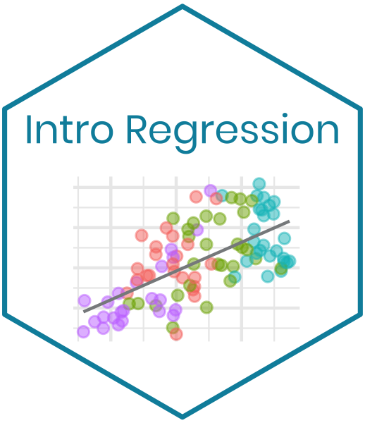

Intro Regression
Latest update: 2020-08-23
Welcome to Intro Regression!

The content in this book was originally developed for STA 210: Regression Analysis at Duke University.The computing aspects of the assignments are written using the tidyverse syntax in R; however, the assignments can be adapted to fit the computing language of your choice. All of the files are available in the Intro Regression GitHub repo.
This book is under development and will be periodically upated with new material. Please email me (maria.tackett@duke.edu) if you have any questions, feedback, or suggestions. I would also love to hear about your experience if you use any of the content in your course.
License

This work is licensed under the Creative Commons Attribution-NonCommercial-ShareAlike 4.0 International License.